5 ways to make spring cleaning suck less
1. Get a fresh start.

2. Wax on, wax off.
3. Pray for rain.
4. Full steam ahead.
5. Do double duty.
Spring cleaning shouldn't give you a headache.
At Cleany™ we think it’s dirt and grime, not spring cleaning, that suck.